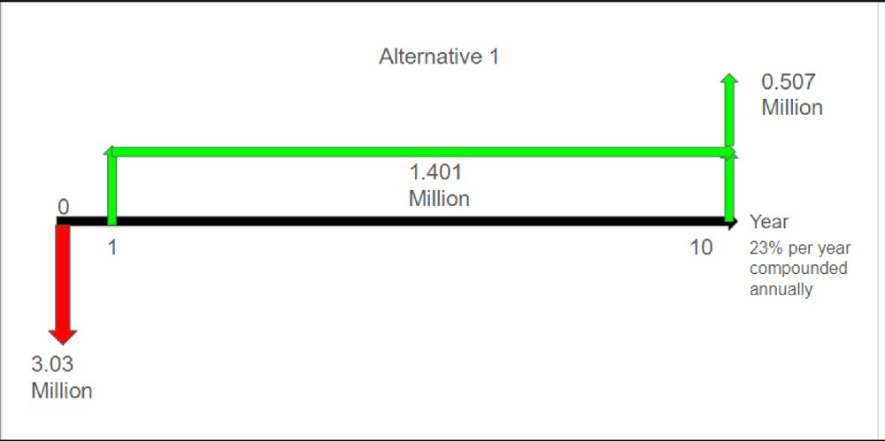
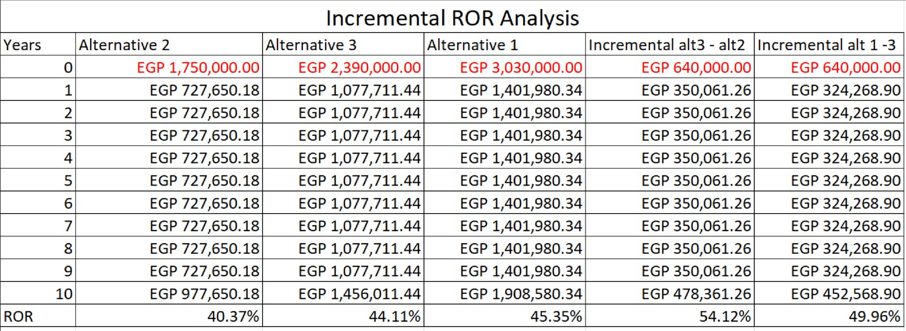
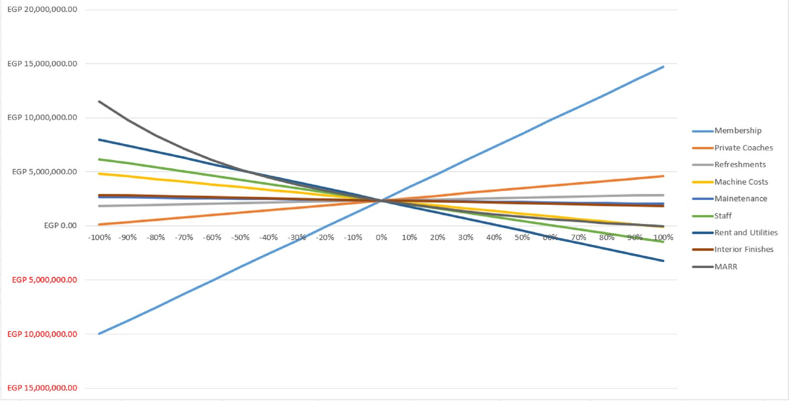

ENGR 3222 Engineering Economy · Spring 2024
Which gym to open?
Three ways to fit out the same rented gym space, compared over 10 years. I built the Excel financial model behind it.
What it is
The group project for ENGR 3222 Engineering Economy: take a real investment decision and work it through with the course's methods. We picked opening a gym. The rent, equipment and price figures came from listings, Egyptian sports suppliers and an interview with a gym owner.
All three options rent the same space and pay the same for the interior. What changes is how the gym is equipped and run:
- Free weights (EGP 1.75M): the cheapest to set up, but it needs more staff.
- A mid-range machine gym (EGP 2.39M).
- A full machine gym with private coaching (EGP 3.03M): the most expensive, with the most income per year.

Does each option pay off?
We needed at least a 23% return a year (the MARR) and checked each option six ways: present, annual and future worth, rate of return, payback and benefit/cost ratio. All three pass every test.
| Option | Investment (EGP) | Present worth (EGP) | Return | Payback (years) | B/C |
|---|---|---|---|---|---|
| Free weights | 1.75M | 1.05M | 40.4% | 3.4 | 1.07 |
| Mid-range machines | 2.39M | 1.75M | 44.1% | 3.4 | 1.14 |
| Full machines + coaching | 3.03M | 2.36M | 45.4% | 3.3 | 1.23 |
Is the extra money worth it?
When every option passes, the real question is whether each step up in cost earns its keep. Going from free weights to mid-range machines costs EGP 640,000 more and earns 54% a year on it. Going from mid-range to the full gym costs another 640,000 and earns 50%. Both beat 23%, so the full machine gym wins.

What could change the answer
We moved every input from −100% to +100% and watched the present worth of the full gym. Membership fees dominate. Reading the chart, if membership income came in about 20% below plan, the gym would no longer earn its 23%. Rent and staff come next. The full gym and the mid-range gym are also close (45% against 44%), so the choice rests mostly on filling the memberships.

What I did
I built the Excel financial model: every revenue and cost line, year by year, for each option, and from it the present, annual and future worth, the rate of return, payback, benefit/cost, the incremental analysis and the sensitivity chart.